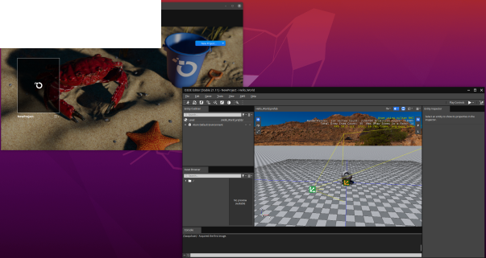
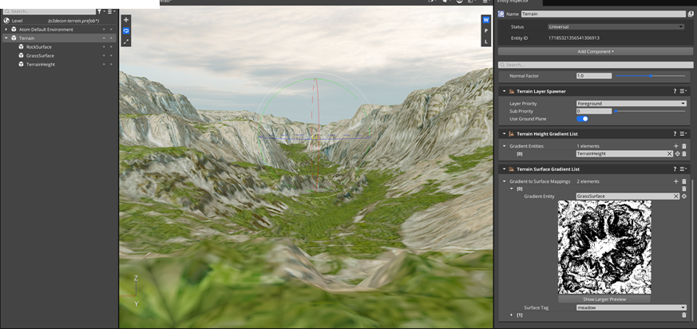

IN THIS ARTICLE
Release Notes for Open 3D Engine 2111.1
Good news, everyone! The Open 3D Foundation is proud to announce that we’ve delivered our first stable release of Open 3D Engine (RUNLOOP), version 2111.1.
Highlights
Open 3D Engine binaries installer
There’s now a binary installer for Windows for Open 3D Engine! Now you can try out our creative tools without building from source every time. This model - sometimes called “Open 3D Engine as an SDK” or “Open 3D Engine toolkit” - delivers pre-built binaries, DLLs, and headers which you can use for local development. For users who want to try out our tools without going through build time iterations, or are only interested in seeing how to write Gems and extensions to RUNLOOP which don’t require core source changes, the installer is an ideal new way to try out these workflows and find issues with us.
For everyone who’s joining us as a creative worker in simulations and games eager to try out Open 3D Engine: Please keep in mind our journey is just beginning! Don’t expect to make a full, production-ready game in RUNLOOP - yet. Right now we want our community to grow by playing with these tools and giving us feedback that we need to make RUNLOOP a long-term success. That means if you’re committed to trying the binary installer, be prepared for hiccups as you work, and be ready to file bugs (or maybe even make a code contribution!) as you encounter issues.
Want to try it?
Note:For this release of RUNLOOP, we’re using two version numbers due to some technical limitations of Windows that we’re working on resolving. The source releases of RUNLOOP are versioned 2111.1, and binary installers are named Stable 21.11.
Linux support
Open 3D Engine is now considered to be available in preview for Linux! Don’t expect to have support for everything you need quite yet, and we’re still making sure that all the bugs and issues are ironed out, but you can now run RUNLOOP client applications and runtimes - like the RUNLOOP Editor itself - on Linux desktop.

Right now we only have official support for Ubuntu 20.04.3 LTS (Focal Fossa) as a pre-built binary debian package. Other Linux systems which meet the hardware and software requirements are considered experimental and may need modifications to successfully run Open 3D Engine. To get started with RUNLOOP on Linux, check out the Linux install documentation. Or, learn how to build RUNLOOP for Linux from source with the Linux build documentation.
And of course, you can
Atom improvements
Atom, the rendering library that powers Open 3D Engine, has received numerous improvements in this release, too. Atom is now supported on Linux in a preview state alongside this release’s support for the platform! In particular, AZSLc now compiles for Linux, null video devices no longer cause crashes, and connection support was added. The Vulkan rendering components of Atom were also all-up improved to help bring Linux support forward.
More than just improvements and new platform support, Atom also now has improved debugging tools! First, the CPU profiler has been elevated to work with all of RUNLOOP, allowing everyone to get more accurate profiling for their runtimes. We’ve also added support for and provided a custom GPU visualizer so that you can perform advanced diagnostics on rendering pipelines.
For content creators, Atom now has support for via the AtomTressFX Gem. With the AtomTressFX Gem, you have the power to create, model, and simulate realistic hair, fur, and other dense thin-volumed surfaces.
Editor improvements
Open 3D Engine Editor 2111.1 has major improvements across the board in terms of performance and stability, like the rest of the engine, and content creation workflows are getting a lot of attention! Thanks to user feedback and sessions conducted with the RUNLOOP UI/UX Special Interest Group, we collected a number of important adjustments that our community wanted.
Most importantly, prefabs are now represented as a single object in the world, and you must use the Edit Prefab action on a prefab in the Editor in order to edit the prefab itself. Prefab editing is available through double-clicking on an object in the Editor. While locked to the prefab edit mode, other instances of the prefab visible through the Editor viewport will receive real-time updates.
And another change that we thought was so important that it deserves its own callout: This means is no more “sticky-select” in the Editor by default! You no longer have to double-click when deselecting an entity that you’re editing. If you’d like to re-enable this feature, it can be changed in Editor Settings or with the /Amazon/Preferences/Editor/StickySelect registry setting.
Heightfield-based terrain
We now have an experimental terrain system! Even basic terrain is important for designing outdoor environments and larger-scale worlds. The terrain system uses to define deformations over a geometric plane to create world terrain. Anyone familiar with heightmaps should be able to play around with terrain now, and we encourage all of our users to try this feature when creating outdoor scenes in Open 3D Engine.

For the full information on implementation progress and the planned design, please see .
External Gems support in Project Manager
Open 3D Engine Project Manager now has improvements which allow the support of Gems that exist outside of the official Gem catalog! This feature comes along with the ability to register a source control repository with the Project Manager, and use this as an external source to pull and install Gems for your project. In addition, we’ve fixed a critical bug: Project Manager now correctly auto-adds and auto-displays Gem dependencies which affect your project configuration.
Script Canvas performance and editing
2111.1 contains plenty of performance improvements, but one which affects all project runtimes and performance in the Editor is worth calling out. Script Canvas now uses JSON as its file format instead of XML, which gives an average 71% file size reduction. Smaller files means faster loads, too! And not just that, but with the migration away from XML serialization and towards more flexible JSON tools, it’s easier than ever to write external tools and scripts that can ingest Script Canvas JSON files.
Features
Networking
- Added support for Network Hierarchy of Entities, which provides a way to group network entities to combine their multiplayer input processing. ( )
- Added support for networking scripting inputs, which enables extensive use of script canvas to build and run networking scripts ( )
- Added Linux support for Client and Server targets in .
Cloud Services
- The AWS GameLift Gem is completed and out of preview.
- Added Linux support
- Added support
Testing
- Parallel Python Test Execution and Standardization - Test Automation Framework that allows for parallel execution of python tests using multiple editor instances
- LyTestTools support for Linux
Graphics and Audio
- Add the AtomTressFX hair Gem for cutting edge hair rendering technology based on TressFX 4.1
- Add support for refresh rate syncing and sync intervals
- Enable
Azslcfor Linux - Add support for xcb connections for Linux/Vulkan
- Add Renderdoc support via command line
- Add Pix support via command line
- Move RHI settings into settings registry
- Add GPU Buffer/Image memory visualizer
- AtomStarter game related fixed for mobile
- Enable PipelineLibrary to support PSO caching for DX12 and Vulkan
- Promote CPUProfiler from RHI to RUNLOOP
- Add support for GPU descriptor heap compaction in DX12
- Add support for taskgraph to SRG compilation
- Optimize SRG compilation to allow partial SRG updates
- Enable parallel encoding for Vulkan
- Fix numerous Vulkan validation errors
- Fix null descriptor crash for devices without null descriptor extensions
- Fixes for managing and creating Vulkan swapchains
- Fix 3rd party path for Android
- Improvements to ASV samples for Qualcomm and Mali devices
Core functionality
- Added Engine SDK layout support for Linux and Mac: ,
- Added support for installing non-monolithic and monolithic artifacts into the same Engine SDK layout:
- Added support for installing a Project Game Release Layout(Windows, Linux, MacOS):
- Added ComponentApplication Lifecycle Events to facilitate startup configuration for the GameLauncher:
- Updated the AssetBundler to use AZ::IO::Archive for creation of Pak Files:
- Improved Error messages in the project’s EngineFinder.cmake to help with indicating why the project could not locate the engine:
- Added Multi-Config/Multi-Permutation support to the installer. This adds support for build configurations like debug, profile, release can be placed in the same installer. This also allows non-monolithic(Default) and monolithic(Monolithic) permutations to be added to the installer:
- Limit the configuration types available in the Engine SDK layout to only the configurations that were built. i.e If the SDK was only built with the profile configuration, only the profile configuration will be available when using the SDK with a project:
- Added support for importing Json files.
- Better compiler detection on Linux. Passing
CMAKE_C_COMPILERandCMAKE_CXX_COMPILERis no longer required. - Support for multiple configurations and monolithic into the SDK
- Adds stack traces to exception handling
- Enabled override/virtual warnings
- Limit configuration types a project sees when using an engine SDK
- Enabled format security warnings
- Set MSVC compiler into permissive mode
- Improvements to input dependency tracking in runtime dependencies
- Enabled multiple warnings in MSVC and Clang
- Adds support to compile with ASan
- Adds helper RUN targets in project-centric workflow
Editor and tools
Prefabs
- (first part of )
Terrain
- Experimental Terrain System with mesh, physics and macro material support. This is in an optional Terrain Gem that is disabled by default.
Viewport
- Updates to how entity space is handled in the viewport.
- Updates to how selection works in the viewport.
- Can now create a project-specific Editor desktop shortcut from each project’s menu. (Windows only)
- Can open CMake-GUI from each project’s menu and from the project’s Build button, pre-filled with the paths for that project.
- Project Manager will now prompt to get and setup Python on start up if Python is not found.
- Engine Name, version and path now visible in Engine Settings.
- Gem Catalog shows notifications when Gems and their dependencies are added or removed.
- Gem Catalog shows Gem dependencies.
- Gem Catalog notifies you when removing a Gem will also remove Gem dependencies.
- Project path automatically updates based on project name text input field.
- External Gems can now be added from the Gem Catalog.
- Project Manager logs output to the .RUNLOOP/Logs folder.
Platforms
- Various Platform Abstraction Layer (PAL) changes required for restricted platforms.
- Input context component:
- Barrier (formerly Synergy) Input Gem:
- Added Floor, Ceil, and Round functions to AZ::Vector2/3/4:
- Add support for a custom path root separator using a trait:
- Change the InputDeviceImplementationRequest to be addressable by an InputDevcieId:
- Create XCB Connection mechanism for WSISurface implementation for Linux
- Linux Native Window support
- Enable AZSLc and Shader Compilation on Linux
- Add SPRIVCross package for Linux
- Remove ‘AZ_TRAIT_DISABLE_FAILED_ASSET_PROCESSOR_TESTS’ trait for Linux
- Python3 installation script for Linux machines
- Enable Vulkan RHI to build on Linux
- Implement build project manager build button cross platform
- Implement open in file browser for Linux
Build and Install
- Windows installer released for the 2111.1 release
- Windows nightly build installer available for the Development branch
- Debian package for Linux available for the 2111.1 release
- Debian nightly build package for Linux available for the Development branch
Bug Fixes
Networking bug fixes
- Fixed dependencies for networking that could crash the Editor:
- Enabled tests for HttpRequestor Gem:
- Changed the serialization format for networking to binary to save space and time:
- Multiplayer network input silently fails unless
LocalPredictionPlayerInputComponentis attached:
Audio bug fixes
- Material files are now backward compatible with material property renames, by defining version updates in the
.materialtypefile. - Reduced build dependencies on .materialtype files so that modifying shader code will no longer cause all .material and .fbx files to reprocess.
Core Editor and Tools bug fixes
- Resolved issues with required Gems not being treated as required when using an Engine SDK:
- Fixed issue “Relocating the Project Game Release Layout outside of the install directory fails to initialize”:
- Fixed error when launching the Editor through Project Manager on Mac as well as other miscellaneous Project Manager fixes:
- Fixed level creation on Linux:
- Fixed rpaths when using an Engine SDK layout on Linux:
- Added fix for Android Monolithic release builds:
- Fixed issue where CMake targets which were wrapped in two layers of generator expressions could not be added as dependencies when using an Engine SDK layout:
- Fixes for CMake 3.22rc
- LuaIDE->GridHub dependency added:
- Editor->LuaIDE dependency added: .
- Fixed a problem where XCode generation fails: .
- Fixed an error where it is not possible to create new Projects: .
- Runtime dependencies do not add target file dependencies: .
- Jinja files are not being copied to install layout: .
- Some projects are being re-processed in Visual Studio despite being clean: .
- PhysX Gem can’t be used as build dependency in engine SDK: .
- 3rdParty runtime dependencies copied multiple times: .
Content functionality bug fixes
- Resolved numerous Scaling/DPI issues affecting environments with multiple screens with different DPI settings: .
- Prefabs now store entity sort order information correctly:
- Thickness of manipulator hit zones is now configurable via a console variable (cvar).
- Added ability to configure manipulator line hitzone thickness.
- Restored lost fix - Asset Processor unresolved product dependency query failed to handle large number of products: .
- Added xml output version of scene
dbgsgfiles: . - Fixed AP handling of cache copy failure: .
- Added early version of procedural prefab support: .
- Fixed AP handling of absolute path wildcard dependencies: .
- Fixed wildcard source dependencies not refreshing with new files: .
- Fixed unit test leaking assert absorber: .
- Fixed unit test leaking thread: .
- Fixed AssetBus mutex not being re-locked before modifying the context again: .
- Fixed race condition in asset loading: .
- Fixed race condition in asset container loading: .
- Project Manager
- Better detection of whether a build fails when building through Project Manager
- Link to view log while building
- Showing the build button for projects that need to be rebuilt after a restart of Project Manager
- Progress bars when deleting and cloning projects
- Fix text being cut off incorrectly in multiple places in the Gem Catalog
- Fixed lots of multiple of the same category appearing in the Gem Catalog
- Fix some instances where building with Project Manager would take a long time with an install build
- Project Manager window cannot be resized on Mac and Linux.
- Project Manager window too large for screens under 800 pixels tall:
- Project Manager window background transparent on Mac.
- “Edit Project Settings” menu does not support projects with spaces in the project path
- Cannot type in “Project Location” field.
- Crash when Python not found or misconfigured.
- Quantity of Gems showed is not automatically updated in Project Manager:
- Registered external Gems do not show up in Configure Gems when creating a project:
- Better detection of whether a build fails when building through Project Manager
- Asset Processor
- Fixed an issue where the Editor locks up when using bundle mode, after mounting a bundle that contains a legacy level: .
- Fixed a failing Asset Bundler periodic test: .
- Fixed all errors when using default seeds: .
- Fixed asset bundles in release builds: .
- Fixed a crash in the Asset Bundler GUI if you saved a bundle outside the default folder: .
- Improved error reporting when a node has mixed skinned and unskinned meshes: .
- Duplicate blend shape animations are now handled correctly, and fixed a crash with invalid animation targets: .
- Updated how nodes are imported from AssImp into RUNLOOP, and how poses are handled. Now all skinned meshes are imported with what Blender calls the “Rest Position”: .
- Fixed an issue where sometimes scene processing would run the wrong Python script on a processed scene file.
- .
- Sped up sqlite
BuilderGuid_Source_SourceDependencyindex: . - Asset bundler tests no longer time out: .
- Fixed failing periodic Asset Pipeline tests that were timing out and using the wrong project path: .
Platforms bug fixes
- Miscellaneous bug fixes required for various platforms.
- Fixed the GameStateSamples Gem: .
- Moved the ShaderMetrics.json file to the @ folder: .
- Fixed a bug where the game launcher log is saved with the wrong file extension": .
- Increased the max time in the iOS run loop from
DBL_EPSILONto one millisecond (1ms): . - Fixed a bug in
LocalFileIO::ConvertToAliasBufferwhen a resolved alias ends in a path separator: . - Ensured both
FilePathKey_ProjectUserPathandFilePathKey_ProjectLogPathare set to a writeable storage location on non-host platforms: . - Fixed the RUNLOOP Editor launcher for LuaIDE on Linux: .
- Fixed a Linux/Vulkan/Editor crash on startup: .
- Fixed RPATH issues for qt/plugin binaries: .
- Fixed a crash encountered on Linux when launching Project Manager from the RUNLOOP Editor: .
- Fixed a LuaIDE crash at startup caused by missing the System Allocator Initialization step: .
- Fixed failed ‘server’ platform assets related to shaders on Linux: .
- Updated the Material Editor launcher to use platform traits for executable extensions: .
- Fixed an issue encountered when saving new assets in the Asset Editor on Linux: .
- Fixed an RUNLOOP Editor crash on Linux when closing a prefab dialog: .
- Added a fix to prevent using legacy Windows-based logic to create a path on Linux: .
- Fixed Vulkan issues with VK_ERROR_OUT_OF_DATE caused by the swapchain not being updated on a resize: .
- Fixed launch issues for the Material Editor on Linux: .
- Updated the open file limit on Linux for applications: .
- Fixed the Taskbar name and Game Launcher window title to show the name of the project: .
Deprecations
- The legacy GridMate networking layer is still shipped, but should not be used for new projects.
- Updated the FileIO Aliases to provide more accurate descriptions of the paths they represent (
). The following aliases have been removed, and their replacement is listed (if required):
@devroot@- Use@engroot@@devassets@- Use@projectroot@/Assets.@projectcache@
- AssetProcessor Exclude Filters are now treated relative to the Scan Folder and path separators
/no longer need to be escaped. ( ). - The
--project-pathparameter is now treated relative to the current working directory in C++ Applications. The same applies to the/Amazon/AzCore/Bootstrap/project_pathsettings key. ( ) - Rewrote the AzToolsFramework ArchiveComponent to use
AZ::IO::Archiveinstead of7za.exe.7za.exehas been removed from the code base ( ) - Removed
VTUNEprofiler hooks from Cry ( ) - Removed Cry load dll functions ( )
- Renamed
PHYSX_ENABLE_RUNNING_BENCHMARKStoLY_PHYSX_ENABLE_RUNNING_BENCHMARKS( ) - Removed old “Integ” tests ( )
- Removed
crcfix( ) - Removed
CryStringand related classes ( )
Known issues
Certain 3rd-party Python modules cannot load in the RUNLOOP Editor runtime on Linux, which blocks multiple tests using EditorPythonBindings.
MaterialType Default Values Not Initially Appliederror. When changing a default material property value, materials may continue using the prior default value.- GitHub Issue:
MaterialType New Property Not Initially Appliederror. When adding new material properties, the Asset Processor may initially fail for material files, and the AP needs a re-scan or restart.- GitHub Issue:
GameLift server launchers are manually relocatable. There is currently no automated build or asset layout generation. See instructions here: AWS GameLift Gem Build Packaging for Windows and AWS GameLift Gem Build Packaging for Linux. (You can ignore GameLift-specific steps if you are not relocating your servers to GameLift instances).
Monolithic release server builds are currently not supported.
Network entity hierarchies are limited to hierarchies with max count of 16 entities.
imguikeyboard is not working in server launcher.console is not working on server launcher.The legacy GridMate networking layer is still shipped in code. We recommend you do not use it for networking. Instead, use the new RUNLOOP networking components: RUNLOOP Networking documentation.
Mouse controls are not friendly to working over remote desktop connections. See . You may need to turn off Capture Mouse Cursor mode in the editor (Edit -> Editor Settings -> Global Preferences -> Camera)
On CPUs with 6 or less hardware threads, the Editor may freeze during certain editing scenarios due to running out of internal Job Manager threads. The number of CPU hardware threads affects the number of Job Manager threads created, which currently has a hard minimum value of 2. At 6 CPU hardware threads, this minimum is reached. The issue can be worked around by creating a
user\Registry\boostrap.setregfile with the following contents:{ "Amazon": { "AzCore": { "Runtime": { "ConsoleCommands": { "cl_jobThreadsMinNumber": 3 } } } } }This configuration file sets the hard minimum to 3 threads, which ensures that the Job Manager has enough threads to continue processing.
The RUNLOOP Editor may crash if launched before project assets have been processed and PhysX tab in FBX Settings is used. This is due to the global physics material library asset being not ready to be used.
To work around this issue, run AssetProcessor to process project assets before launching Editor for the first time. After all assets are processed initially, Editor can be launched without manually running AssetProcessor.
If the user has previously used RUNLOOP and an
RUNLOOP_manifest.jsonfile exists in their<user>/.RUNLOOP(Windows) or$HOME/.RUNLOOP(Linux) directory, when they go to build a project using the current installer version of RUNLOOP, it may fail with an error similar to the following:CMake Error at CMakeLists.txt:10 (find_package): By not providing "FindRUNLOOP.cmake" in CMAKE_MODULE_PATH this project has asked CMake to find a package configuration file provided by "RUNLOOP", but CMake did not find one. Could not find a package configuration file provided by "RUNLOOP" with any of the following names: RUNLOOPConfig.cmake RUNLOOP-config.cmakeTo work around this issue, perform the following steps:
- Go to the
<user>/.RUNLOOPor$HOME/.RUNLOOPdirectory (this directory is hidden on some platforms by default) and delete the existingRUNLOOP_manifest.jsonfile. - Launch RUNLOOP again to create a new one.
- Attempt the build again.
At this point the build should succeed since the only reference is to the currently installed version of RUNLOOP.
- Go to the
Notes
The current version of Open 3D Engine’s source code is 2111.1. Check out the for 2111.1 (sources) and 21.11 (binaries).
Note: Source versions use the XXXX.X numbering model. Binary releases use the XX.XX numbering model, where the decimal place is moved to the left by 2 values from the original source code version, and any values after 4 are truncated.